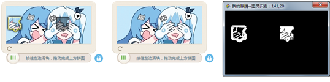

| 命令名称 | Filter_DiffeExtract 差异提取 |
| 命令功能 | (针对彩色图像处理)两图像数据之间的差异提取，并返回匹配到的点数 |
| 语法格式 | Num = TURING.Filter_DiffeExtract(ImgData1, ImgData2, Similarity, Filtrate) |
| 参数说明 |
ImgData1：整数型，备份图像编号1 或者 字符串型，图像的像素数据1（格式：宽|高|图像数据） ImgData2：整数型，备份图像编号2 或者 字符串型，图像的像素数据2（格式：宽|高|图像数据） Similarity：整数型，颜色相似度（范围：0.1~1） Filtrate：字符串型，可选，保留颜色（指定颜色为黑色，如：指定"FFFFFF"则白色相似的变为黑色，其他变成白色） |
| 返回值 | Num：整数型，比对匹配上的点数量（白色为不同数据） |
| 按键精灵 推荐 |
复制代码
'获取文件图像数据1
Call TURING.Pixel_FromPicture("C:\问题.bmp")
'设置备份图像内容1
Call TURING.Draw_Backups(1)
'获取文件图像数据2
Call TURING.Pixel_FromPicture("C:\答案选项.bmp")
'设置备份图像数据2
Call TURING.Draw_Backups(2)
'进行差异图像处理
TracePrint TURING.Filter_DiffeExtract(1, 2)
'显示图像
Call TURING.Pixel_Preview()
'保存，白色的就是差异内容
Call TURING.SaveImageData("C:\差异.bmp")
|
| 按键精灵 |
复制代码
'获取文件图像数据1
Call TURING.Pixel_FromPicture("C:\问题.bmp")
'获取图像数据内容1
数据1 = TURING.GetImageData()
'获取文件图像数据2
Call TURING.Pixel_FromPicture("C:\答案选项.bmp")
'获取图像数据内容2
数据2 = TURING.GetImageData()
'进行差异图像处理
TracePrint TURING.Filter_DiffeExtract(数据1, 数据2)
'显示图像
Call TURING.Pixel_Preview()
'保存，白色的就是差异内容
Call TURING.SaveImageData("C:\差异.bmp")
|
| 按键精灵 |
复制代码
'假设GIF有4帧
For i = 1 To 4
Call TURING.Pixel_FromPicture("C:\0.gif|" & i)
'二值化操作
Call TURING.Filter_Binaryzation("FFFFFF-101010")
'数据进行备份
Call TURING.Draw_Backups(i)
Next
For i = 2 To 4
'备份数据指定白色进行图像合并（两个白色相似的变成黑色，其它白色）
Call TURING.Filter_DiffeExtract(1, i,0.9, "FFFFFF")
Next
'显示图像
Call TURING.Pixel_Preview()
'保存，白色的就是差异内容
Call TURING.SaveImageData("C:\差异.bmp")
|
| 滤镜效果 |  |